Robots
MVRT robots are fantastic products of engineering
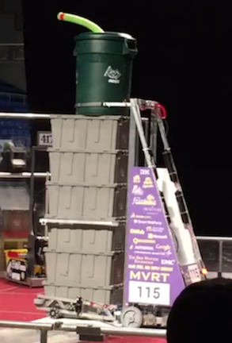
El Toro XVIII
Cypress-based driver station with sliders to control the pickup mechanism 6-tote stack ability Ramp Carrying Ability Landfill feeding specialty
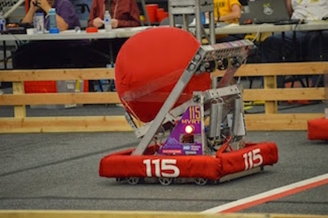
El Toro XVII
Cypress-based driver station with sliders to control the launch mechanism Hot goal autonomous mode with mobility bonus Winch with pneumatic piston for release/loading of launch mechanism Arm with roller to bring the ball into the robot
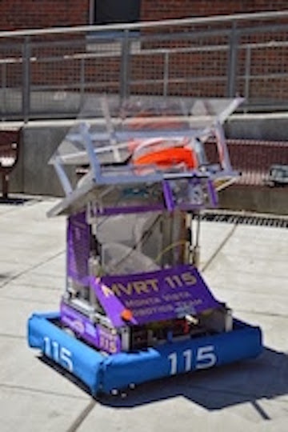
El Toro XVI
Lightest, simplest chassis in several years, but retains strength and maneuverability Cypress-based driver station with buttons for ergonomics and indicator for shooter readiness Camera with vision processing and aiming crosshairs Adjustable speed allows for fine-tuning of shooting Can shoot while in hanging position for late game points "Passive indexing mechanism: consolidated pushing and indexing mechanisms"
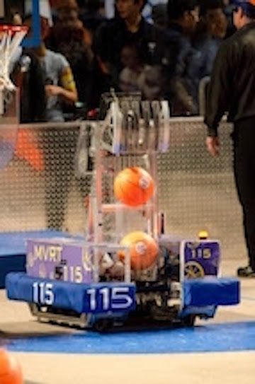
El Toro XV
10 4" wheel drive with a 3/8th inch center offset using 4 CIM motors and all traction wheels Rotating wedge manipulator for lowering the bridge Single ball conveyor and a roller pickup, attached to a two wheel, adjustable speed shooter for scoring against the fender IR Sensors located on conveyor for ball detection Can score two balls in autonomous, at all three heights, and balance on the bridge Slanted chassis on both sides to go over the bump quickly
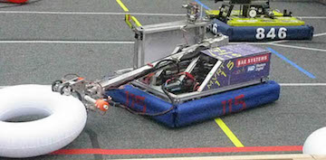
El Toro XIV
6 Wheel drive with an 1/8th inch offset using 4 CIM motors and center traction wheels for quick turning Grabber with 4 treaded wheels and v-belts to quickly grab and manuver all three shapes of tubes Single-staged telescoping arm with 200 degree pivot to pick up from both sides Line Sensors for autonomous placing and both anolog and digital encoders to control the arm IR sensors on grabber for pool tube dedection Spring loaded slides for quick horizontal minibot deployment Minibot with 4 wheels and magnets climbs the pole in under 3 seconds
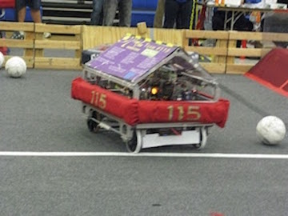
El Toro XIII
4 wheel drivetrain using 4 CIM motors and 2 high traction wheels in front for auto-alignment over bump and pivoting around ball Fuzzy roller for ball control and auto-center for kicker Spring-tensioned, pneumatically actuated kicker Target tracking with camera Roll cage for passive self righting
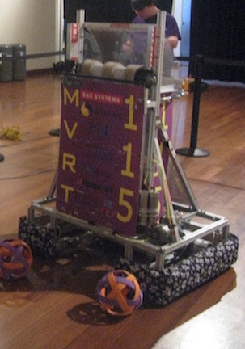
El Toro XII
6x4 wheel drivetrain using 2 CIM motors and 2 wheels in the front for weight distribustion 2 Conveyor styles, fuzzy PVC wide belt or 1/2" wide v-belts Pneumatically actuated "wall" behind the conveyor to allow pickup of balls without shooting them out, can hold 8–9 balls cRio with gyro to detect angle and auto-correct
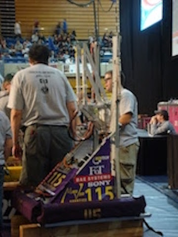
El Toro XI
4 wheel drivetrain running 4 CIM motors offers speed and maneuverability while racing around the track. 3 stage elevator allows for knocking off the ball from the overpass during hybrid and raises to 8'6" in order to hurdle the trackball. Pneumatically actuated grabber always for grabbing the ball from the ground and used for holding the ball around the track. Also used to place the ball on the overpass in the end game. IR board mounted to be used during the hybrid mode.
El Toro X
6 wheel drivetrain running 4 CIM motors offers speed and maneuverability. 2 stage arm folds under 60" and deploys to score all three levels of the rack. Pneumatically actuated grabber picks ringers up from the floor and wall.

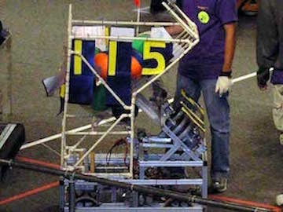
El Toro IX
The four wheel kit drive train using 4 Chiaphua motors Picks balls off the ground A two level basket holds up to 20 balls A variable speed shooter can shoot from past midfield
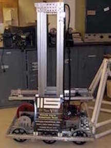
El Toro VIII
"6-wheel drive train: 4 chiaphua motors, fast turning" "Elevator arm: Grabs Tetras, 30-30 mm Bosch extrusion, extends up to 10 ft high"
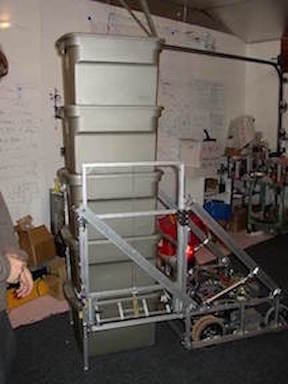
El Toro VI
Extremely durable 4-wheel drive train using 2 drill motors and 2 chiaphua motors Had an elevator that was capable of stacking boxes Made of 20-20 mm Bosch extrusion First robot to have EEPROM, a joystick recording program, which is used during autonomous Got 1st place at Silicon Valley
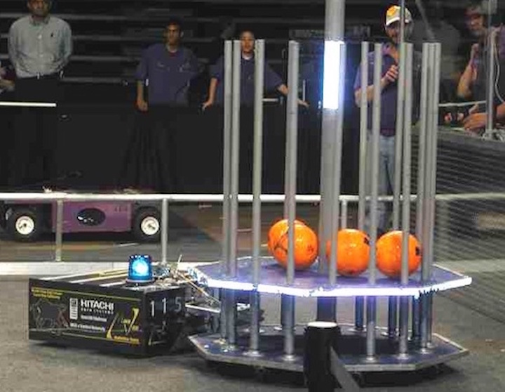
El Toro V
Fast 4-motor drive train Low center of gravity Large claw used to pull the large goals Made of 30-30 mm Bosch extrusion Had a mouse-bot inside which is able to run back to the home zone Got second place in Silicon Valley
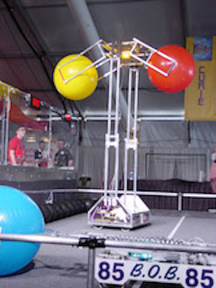
El Toro IV
Picks up 2 big balls Can also pick up 6 small balls (4 reliably) Can balance 2 goals while holding 2 big balls above them to ensure they don't fall off Can grab or release stretcher or goal Can place a big ball on a goal that is on the ramp
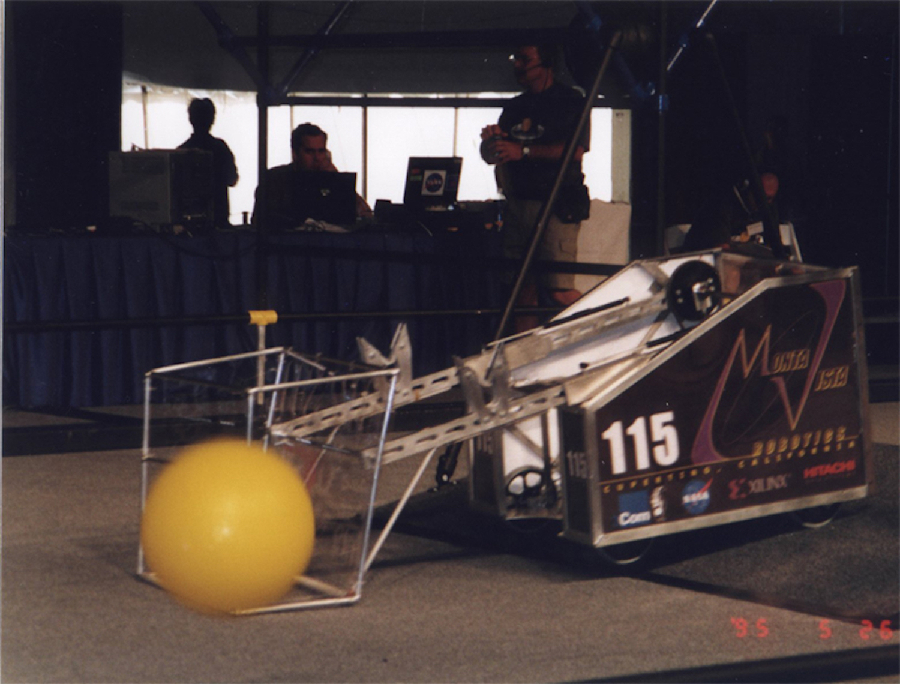
El Toro III
The space between bars of the basket is slightly smaller than the diameter of a ball. To pick up balls the robot either pushes balls against the wall or squishes the ball from above. Could hang reliably
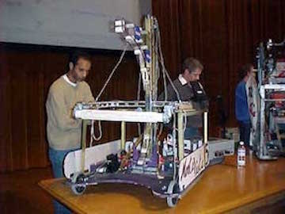
El Toro I
"Drivetrain: The four wheel tank drive configuration of this robot allows for a small turning radius, good maneuver abilities as well as a decent speed" The Basket carries eight or more floppies above the eight foot mark The Basket Raising Belt linked to the basket, enables the robot to raise the basket above eight feet by extending the two stage arm perpendicular to the ground and pulling the basket up The Leverage Arm rotates and pushes off the puck to lift the back of the robot which allows the rear wheels to drive the robot backwards on to the puck The Two Stage Arm designed for multiple uses, is capable of blocking other robot's baskets from raising and assists in picking and raising floppies above the eight foot mark The Floppy grabbing device is able to pick up and release floppies with the aid of velcro